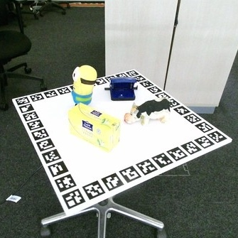
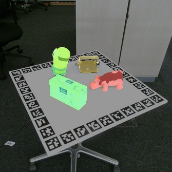

Muhammad Zubair Irshad4, Fabien Despinoy3, Rahaf Aljundi3, Stratis Gavves1, Sergey Zakharov4

RecGen is a generative framework that reconstructs complete 3D multi-object scenes — including shape, texture, and pose — from one or more RGB-D images, even under heavy occlusion. By combining compositional synthetic data with strong 3D shape priors, it generalizes across diverse objects and real-world settings. RecGen outperforms the previous state of the art by over 30% in shape quality and 34% in pose estimation, while using nearly 80% fewer training meshes.
From a single image, RecGen reconstructs a full 3D scene. Select a scene below to explore interactively.


RecGen is trained on 198K high-quality 3D assets from six public datasets, totaling 3.2M synthetic RGB-D images of compositional multi-object and part-based scenes.
Part Datasets
Single-object scenes with fine-grained parts and self-occlusions.
RecGen is evaluated on four object-centric datasets and one part-centric dataset for shape and pose estimation.
Drag the slider to compare any two methods. Select a dataset, scene, and the methods to compare.
Comparison of pose estimation (ADD-SB) and shape reconstruction (CDnorm) metrics across methods. RecGen outperforms baselines on both object-centric and part-centric datasets.
A closer look at where RecGen's gains come from: occlusion robustness, symmetric object handling, and multi-view conditioning
Performance by occlusion severity. Average across object-centric datasets (HB, LM-O, ReOcS).
Symmetric objects (e.g. bowls, bottles, cups) are inherently ambiguous from a single viewpoint — many orientations produce identical images. Rather than collapsing to a single (often wrong) pose, RecGen's probabilistic generation naturally handles these ambiguities, producing reconstructions that are faithful to the observation regardless of the underlying symmetry.
Appearance generation for objects with symmetric shapes. RecGen produces pose-consistent textures, while SAM3D generates pose-agnostic appearances that often mismatch the observation.
To quantify this, we use a VLM-based orientation check: the percentage of symmetric-object reconstructions whose orientation matches the ground truth.
RecGen can leverage multiple RGB-D observations to produce more complete and accurate reconstructions. By fusing information across viewpoints, the model resolves ambiguities and fills in occluded regions. Out of the two pose predictions, the best one is selected based on its alignment with the corresponding view’s point map in metric camera space.
@misc{zadaianchuk2025recgen,
title={RecGen: Reconstructive Generation of 3D Scenes from RGB-D Observations},
author={Andrii Zadaianchuk and Leonardo Barcellona and Lennard Schuenemann and Christian Gumbsch and Zehao Wang and Muhammad Zubair Irshad and Fabien Despinoy and Rahaf Aljundi and Stratis Gavves and Sergey Zakharov},
year={2026},
}